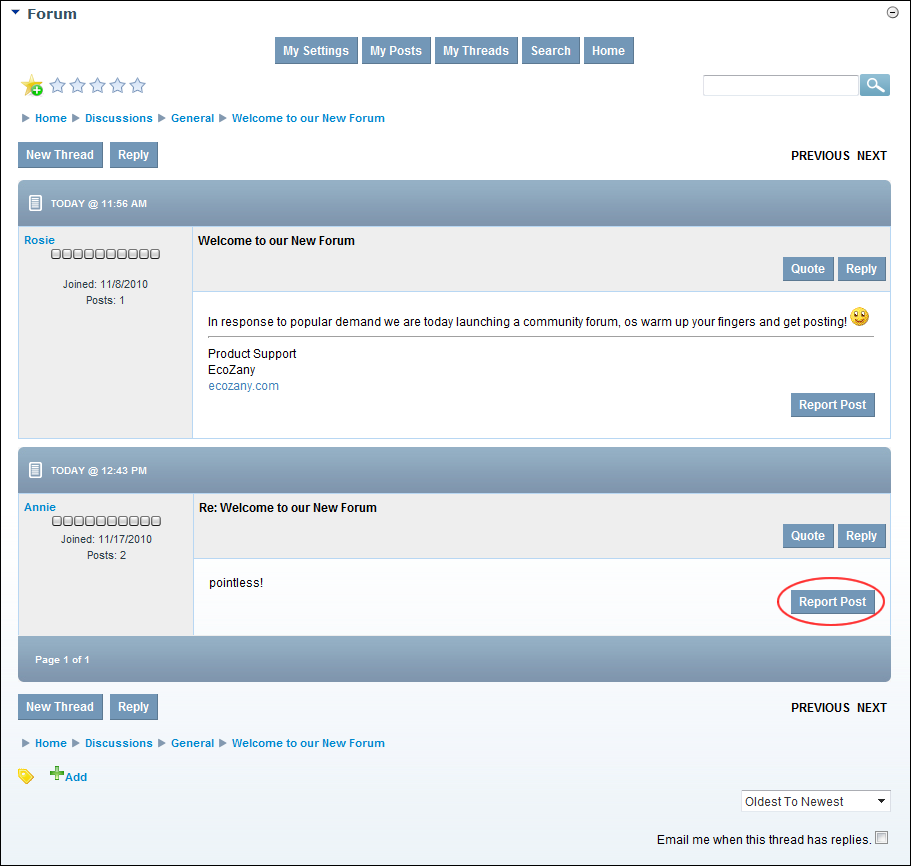
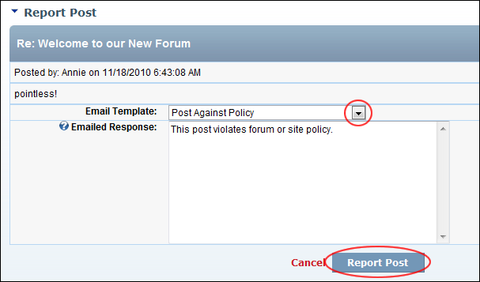
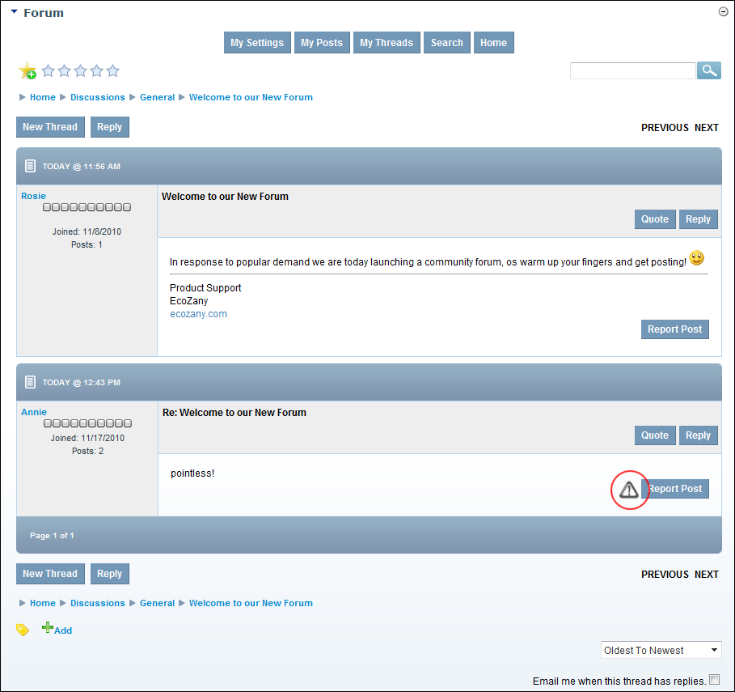

Reporting a Post
How to report an inappropriate post on the Forum module. This sends a report email to the associated Forum Moderators/Administrators. Note: This option may be disabled.
- Navigate to the post. See "Viewing any Post"

- Click the Report Post link. This opens the Report Post page.
- At Email Template, select the reason for reporting the post from these options:
- Post is Duplicate
- Post is Against Policy
- Post is Spam
- Post Off Topic
- Post Contains Profanity
- Post Contains Excessive Advertising
- Optional. In the Emailed Response text box, edit email message.

- Click the Report Post link. This displays the message "Are you sure you want to report this post?"
-
The post now displays the Report Warning icon. Mouse over the icon to view the number of reports against this post.

A Reported Post